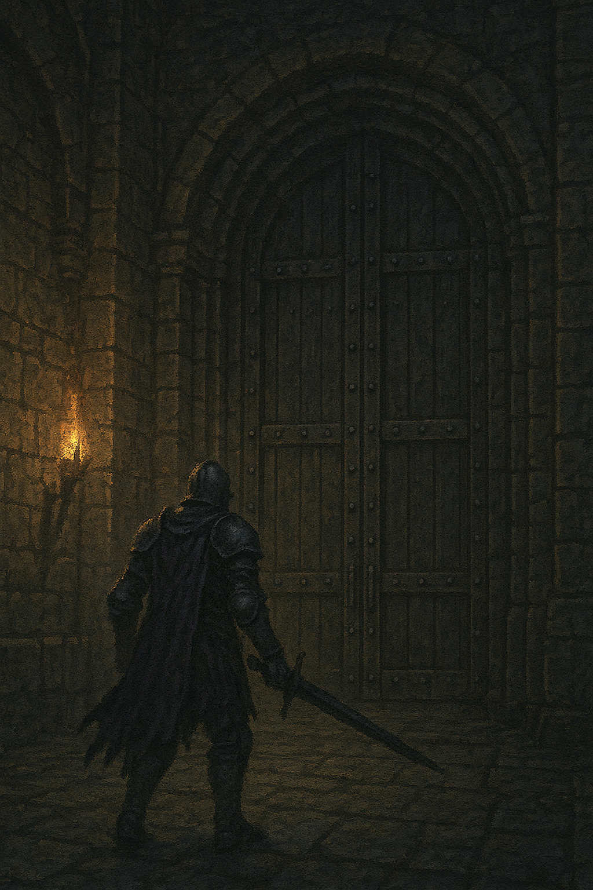

Alaric s'infiltre dans la forteresse et progresse jusqu’au quartier du seigneur. Il sent la pression monter en lui, il sait ce qui l'attend. Toute sa vie il s'est préparer pour ce combat. Il prend une profonde aspiration et ouvre la porte massive qui se dresse devant lui...